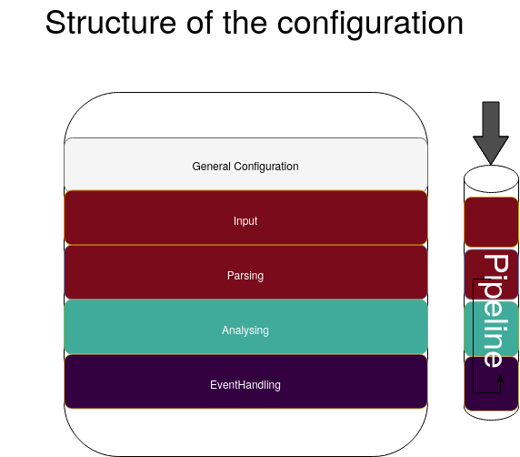
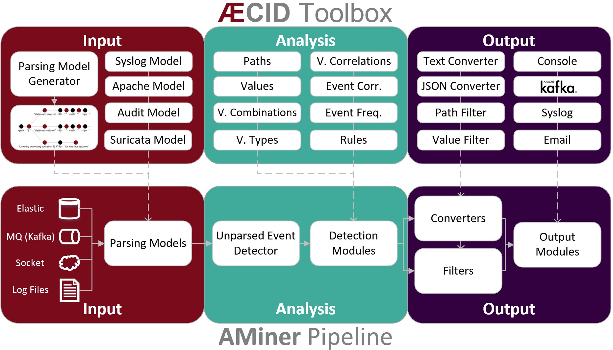

Overview
The logdata-anomaly-miner can be configured in two different formats: yaml and python. The preferred format is yaml and the default configuration file for it is /etc/aminer/config.yaml. The python format can be configured in /etc/aminer/config.py and offers advanced possibilities to configure the logdata-anomaly-miner. However, this is only recommended for experts, as no errors are caught in the python configuration, which can make debugging very difficult. For both formats there are template configurations in /etc/aminer/template_config.yaml and /etc/aminer/template_config.py.
The basic structure of the logdata-anomaly-miner is illustrated in the folloging diagram:

Analysis Pipeline
The core component of the logdata-anomaly-miner is the "analysis pipeline". It consists of the parts INPUT, ANALYSIS and OUTPUT.

Command-line Parameters
-h, --help
Show the help message and exit.
-v, --version
Show program's version number and exit.
-u, --check-updates
Check if updates for the aminer are available and exit.
-c CONFIG, --config CONFIG
- Default: /etc/aminer/config.yml
Use the settings of the file CONFIG on startup. Two config-variants are allowed: python and yaml.
See also
-D, --daemon
Run aminer as a daemon process.
-s {0,1,2}, --stat {0,1,2}
Set the stat level. Possible stat-levels are 0 for no statistics, 1 for normal statistic level and 2 for verbose statistics.
-d {0,1,2}, --debug {0,1,2}
Set the debug level. Possible debug-levels are 0 for no debugging, 1 for normal output (INFO and above), 2 for printing all debug information.
--run-analysis
Run aminer analysis-child.
Note
This parameter is for internal use only.
-C, --clear
Remove all persistence directories and run aminer.
-r REMOVE, --remove REMOVE
Remove a specific persistence directory. REMOVE must be the name of the directory and must not contain '/' or '.'. Usually this directory can be found in '/var/lib/aminer'.
-R RESTORE, --restore RESTORE
Restore a persistence backup. RESTORE must be the name of the directory and must not contain '/' or '.'. Usually this directory can be found in '/var/lib/aminer'.
-f, --from-begin
Removes repositioning data before starting the aminer so that all input files will be analyzed starting from the first line in the file rather than the last previously analyzed line.
-o, --offline-mode
Stop the aminer after all logs have been processed.
Note
This parameter is useful for forensic analysis.
--config-properties KEY=VALUE [KEY=VALUE ...]
Set a number of config_properties by using key-value pairs (do not put spaces before or after the = sign). If a value contains spaces, you should define it with double quotes: 'foo="this is a sentence". Note that values are always treated as strings. If values are already defined in the config_properties, the input types are converted to the ones already existing.
Configuration Reference
General Configuration
LearnMode
- Type: boolean (True,False)
- Default: False
This options turns the LearnMode on globally.
Warning
This option can be overruled by the learn_mode that is configurable per analysis component.
LearnMode: True
AminerUser
- Default: aminer
This option defines the system-user that owns the aminer-process.
AminerUser: 'aminer'
AminerGroup
- Default: aminer
This option defines the system-group that owns the aminer-process.
AminerGroup: 'aminer'
AnalysisConfigFile
- Default: None
This (optional) configuration file contains the whole analysis child configuration (code). When missing those configuration parameters are also taken from the main config.
Warning
This option is only available for python configs. It does not work for yaml configs.
config_properties['AnalysisConfigFile'] = 'analysis.py'
RemoteControlSocket
This option controls where the unix-domain-socket for the RemoteControl should be created. The socket will not be created if this option is not set.
RemoteControlSocket: '/var/lib/aminer/remcontrol.sock'
SuppressNewMatchPathDetector
- Default: False
- Type: boolean (True,False)
Disable the output of the NewMatchPathDetector which detects new paths for logtypes.
SuppressNewMatchPathDetector: False
LogResourceList
- Required: True
- Resource-Types:
file://,unix://
Define the list of log resources to read from: the resources named here
do not need to exist when aminer is started. This will just result in a
warning. However if they exist, they have to be readable by the aminer
process! Every resource needs to define the url with the
resource-type. Optionally every resource can define json parameter
(boolean) to define if the resource input data is json and parser_id
to define the parser which should process the log data from this
resource. By default the json_format parameter in the input section
is used to determine if the input data is json or not.
Supported types are:
- file://[path]: Read data from file, reopen it after rollover
- unix://[path]: Open the path as UNIX local socket for reading
LogResourceList:
- url: 'file:///var/log/apache2/access.log'
- url: 'file:///home/ubuntu/data/mail.cup.com-train/daemon.log'
json: True
parser_id: 'syslog_parser'
- url: 'file:///home/ubuntu/data/mail.cup.com-train/auth.log'
- url: 'file:///home/ubuntu/data/mail.cup.com-train/suricata/eve.json'
- url: 'file:///home/ubuntu/data/mail.cup.com-train/suricata/fast.log'
json: True
parser_id: 'suricata_fastlog'
Core.PersistenceDir
- Default: /var/lib/aminer
Read and store information to be used between multiple executions of aminer in this directory. The directory must only be accessible to the 'AminerUser' but not group/world readable. On violation, aminer will refuse to start.
Core.PersistenceDir: '/var/lib/aminer'
Core.PersistencePeriod
- Type: Number of seconds
- Default: 600
This options controls whether the logdata-anomaly-miner should write its persistency to disk.
Core.PersistencePeriod: 600
Core.LogDir
- Default: /var/lib/aminer/log
Directory for logfiles. This directory must be writeable to the 'AminerUser'.
Core.LogDir: '/var/lib/aminer/log'
MailAlerting.TargetAddress
- Default: disabled
Define a target e-mail address to send alerts to. When undefined, no e-mail notification hooks are added.
MailAlerting.TargetAddress: 'root@localhost'
MailAlerting.FromAddress
Sender address of e-mail alerts. When undefined, "sendmail" implementation on host will decide, which sender address should be used.
MailAlerting.FromAddress: 'root@localhost'
MailAlerting.SubjectPrefix
- Default: "aminer Alerts"
Define, which text should be prepended to the standard aminer subject.
MailAlerting.SubjectPrefix: 'aminer Alerts:'
MailAlerting.AlertGraceTime
- Type: Number of seconds
- Default: 0 (any event can immediately trigger alerting)
Define a grace time after startup before aminer will react to an event and send the first alert e-mail.
MailAlerting.AlertGraceTime: 0
MailAlerting.EventCollectTime
- Type: Number of seconds
- Default: 10
Define how many seconds to wait after a first event triggered the alerting procedure before really sending out the e-mail. In that timespan, events are collected and will be sent all using a single e-mail.
MailAlerting.EventCollectTime: 10
MailAlerting.MinAlertGap
- Type: Number of seconds
- Default: 600
Define the minimum time between two alert e-mails in seconds to avoid spamming. All events during this timespan are collected and sent out with the next report.
MailAlerting.MinAlertGap: 600
MailAlerting.MaxAlertGap
- Type: Number of seconds
- Default: 600
Define the maximum time between two alert e-mails in seconds. When undefined this defaults to "MailAlerting.MinAlertGap". Otherwise this will activate an exponential backoff to reduce messages during permanent error states by increasing the alert gap by 50% when more alert-worthy events were recorded while the previous gap time was not yet elapsed.
MailAlerting.MaxAlertGap: 600
MailAlerting.MaxEventsPerMessage
- Type: Number of events
- Default: 1000
Define how many events should be included in one alert mail at most.
MailAlerting.MaxEventsPerMessage: 1000
LogPrefix
This option defines the prefix for the output of each anomaly.
LogPrefix: ''
Log.Encoding
- Type: string
- Default: 'utf-8'
This option defines the encoding of the logfiles.
Log.Encoding: 'utf-8'
Log.StatisticsPeriod
- Type: Number of seconds
- Default: 3600
Defines how often to write into stat-logfiles.
Log.StatisticsPeriod: 3600
Log.StatisticsLevel
- Type: Number of loglevel
- Default: 1
Defines the loglevel for the stat logs.
Log.StatisticsLevel: 2
Log.DebugLevel
- Type: Number of loglevel
- Default: 1
Defines the loglevel of the aminer debug-logfile.
Log.DebugLevel: 2
Log.RemoteControlLogFile
- Type: string (path to the logfile)
- Default: '/var/lib/aminer/log/aminerRemoteLog.log'
Defines the path of the logfile for the RemoteControl.
Log.RemoteControlLogFile: '/var/log/aminerremotecontrol.log'
Log.StatisticsFile
- Type: string (path to the logfile)
- Default: '/var/lib/aminer/log/statistics.log'
Defines the path of the stats-file.
Log.StatisticsFile: '/var/log/aminer-stats.log'
Log.DebugFile
- Type: string (path to the logfile)
- Default: '/var/lib/aminer/log/aminer.log'
Defines the path of the debug-log-file.
Log.DebugFile: '/var/log/aminer.log'
Log.Rotation.MaxBytes
- Type: number of bytes
- Default: 1048576 (1 Megabyte)
Defines the number of bytes before "Log.RemoteControlLogFile", "Log.StatisticsFile" and "Log.DebugFile" is rotated.
Log.Rotation.MaxBytes: 1048576
Log.Rotation.BackupCount
- Type: number of old logfiles
- Default: 5
Defines the number of logfiles saved after rotation of "Log.RemoteControlLogFile", "Log.StatisticsFile" and "Log.DebugFile".
Log.Rotation.BackupCount: 5
Input
timestamp_paths
- Type: string or list of strings
Parser paths to DateTimeModelElements to set timestamp of log events.
timestamp_paths: '/model/time'
timestamp_paths:
- '/parser/model/time'
- '/parser/model/type/execve/time'
- '/parser/model/type/proctitle/time'
- '/parser/model/type/syscall/time'
- '/parser/model/type/path/time'
multi_source
- Type: boolean (True,False)
- Default: False
Flag to enable chronologically correct parsing from multiple input-logfiles.
multi_source: True
eol_sep
- Default: 'n'
End of Line seperator for events.
Note
Enables parsing of multiline logs.
eol_sep: '\r\n'
json_format
- Type: boolean (True,False)
- Default: False
Enables parsing of logs in json-format.
json_format: True
suppress_unparsed
- Default: False
Boolean value that allows to suppress anomaly output about unparsed log atoms.
suppress_unparsed: True
Parsing
There are some predefined standard-model-elements like IpAddressDataModelElement, DateTimeModelElement, FixedDataModelElement and so on. They are located in the python-source-tree of logdata-anomaly-miner. A comprehensive list of all possible standard-model-elements can be found below. Using these standard-model-elements it is possible to create custom parser models. Currently there are two methods of doing it:
- Using a python-script that is located in /etc/aminer/conf-enabled:
""" /etc/aminer/conf-enabled/ApacheAccessParsingModel.py"""
from aminer.parsing.DateTimeModelElement import DateTimeModelElement
from aminer.parsing.DecimalIntegerValueModelElement import DecimalIntegerValueModelElement
from aminer.parsing.DelimitedDataModelElement import DelimitedDataModelElement
from aminer.parsing.FirstMatchModelElement import FirstMatchModelElement
from aminer.parsing.FixedDataModelElement import FixedDataModelElement
from aminer.parsing.FixedWordlistDataModelElement import FixedWordlistDataModelElement
from aminer.parsing.IpAddressDataModelElement import IpAddressDataModelElement
from aminer.parsing.OptionalMatchModelElement import OptionalMatchModelElement
from aminer.parsing.SequenceModelElement import SequenceModelElement
from aminer.parsing.VariableByteDataModelElement import VariableByteDataModelElement
def get_model():
"""Return a model to parse Apache Access logs from the AIT-LDS."""
alphabet = b'!"#$%&\'()*+,-./0123456789:;<>?@ABCDEFGHIJKLMNOPQRSTUVWXYZ\\^_`abcdefghijklmnopqrstuvwxyz{|}~=[]'
model = SequenceModelElement('model', [
FirstMatchModelElement('client_ip', [
IpAddressDataModelElement('client_ip'),
FixedDataModelElement('localhost', b'::1')
]),
FixedDataModelElement('sp1', b' '),
VariableByteDataModelElement('client_id', alphabet),
FixedDataModelElement('sp2', b' '),
VariableByteDataModelElement('user_id', alphabet),
FixedDataModelElement('sp3', b' ['),
DateTimeModelElement('time', b'%d/%b/%Y:%H:%M:%S'),
FixedDataModelElement('sp4', b' +'),
DecimalIntegerValueModelElement('tz'),
FixedDataModelElement('sp5', b'] "'),
FirstMatchModelElement('fm', [
FixedDataModelElement('dash', b'-'),
SequenceModelElement('request', [
FixedWordlistDataModelElement('method', [
b'GET', b'POST', b'PUT', b'HEAD', b'DELETE', b'CONNECT', b'OPTIONS', b'TRACE', b'PATCH']),
FixedDataModelElement('sp6', b' '),
DelimitedDataModelElement('request', b' ', b'\\'),
FixedDataModelElement('sp7', b' '),
DelimitedDataModelElement('version', b'"'),
])
]),
FixedDataModelElement('sp8', b'" '),
DecimalIntegerValueModelElement('status_code'),
FixedDataModelElement('sp9', b' '),
DecimalIntegerValueModelElement('content_size'),
OptionalMatchModelElement(
'combined', SequenceModelElement('combined', [
FixedDataModelElement('sp10', b' "'),
DelimitedDataModelElement('referer', b'"', b'\\'),
FixedDataModelElement('sp11', b'" "'),
DelimitedDataModelElement('user_agent', b'"', b'\\'),
FixedDataModelElement('sp12', b'"'),
])),
])
return model
This parser can be used as "type" in /etc/aminer/config.yml:
Parser:
- id: 'apacheModel'
type: ApacheAccessModel
name: 'apache'
Warning
Please do not create files with the ending "ModelElement.py" in /etc/aminer/conf-enabled!
- Configuring the parser-model inline in /etc/aminer/config.yml
Parser:
- id: host_name_model
type: VariableByteDataModelElement
name: 'host'
args: '-.01234567890abcdefghijklmnopqrstuvwxyz:'
- id: identity_model
type: VariableByteDataModelElement
name: 'ident'
args: '-.01234567890abcdefghijklmnopqrstuvwxyz:'
- id: user_name_model
type: VariableByteDataModelElement
name: 'user'
args: '0123456789abcdefghijklmnopqrstuvwxyz.-'
- id: new_time_model
type: DateTimeModelElement
name: 'time'
date_format: '[%d/%b/%Y:%H:%M:%S +0000]'
- id: sq3
type: FixedDataModelElement
name: 'sq3'
args: ' "'
- id: request_method_model
type: FixedWordlistDataModelElement
name: 'method'
args:
- 'GET'
- 'POST'
- 'PUT'
- 'HEAD'
- 'DELETE'
- 'CONNECT'
- 'OPTIONS'
- 'TRACE'
- 'PATCH'
- id: request_model
type: VariableByteDataModelElement
name: 'request'
args: '0123456789abcdefghijklmnopqrstuvwxyzABCDEFGHIJKLMNOPQRSTUVWXYZ.-/()[]{}!$%&=<?*+'
- id: http1
type: FixedDataModelElement
name: 'http1'
args: ' HTTP/'
- id: version_model
type: VariableByteDataModelElement
name: 'version'
args: '0123456789.'
- id: sq4
type: FixedDataModelElement
name: 'sq4'
args: '" '
- id: status_code_model
type: DecimalIntegerValueModelElement
name: 'status'
- id: size_model
type: DecimalIntegerValueModelElement
name: 'size'
- id: sq5
type: FixedDataModelElement
name: 'sq5'
args: ' "-" "'
- id: user_agent_model
type: VariableByteDataModelElement
name: 'useragent'
args: '0123456789abcdefghijklmnopqrstuvwxyzABCDEFGHIJKLMNOPQRSTUVWXYZ.-/()[]{}!$%&=<?*+;:_ '
- id: sq6
type: FixedDataModelElement
name: 'sq6'
args: '"'
- id: 'startModel'
start: True
type: SequenceModelElement
name: 'accesslog'
args:
- host_name_model
- WHITESPACE
- identity_model
- WHITESPACE
- user_name_model
- WHITESPACE
- new_time_model
- sq3
- request_method_model
- WHITESPACE
- request_model
- http1
- version_model
- sq4
- status_code_model
- WHITESPACE
- size_model
- sq5
- user_agent_model
- sq6
The parsing section in /etc/aminer/config.yml starts with the statement "Parser:" followed by a list of parser-models. Every parser-model in this list must have a unique id and a type. The unique id can be used to cascade models by adding the id of an parser-model as arguments(args). One parser of this list must contain start: True that indicates the root of the parser tree:
Parser:
- id: 'apacheModel'
type: ApacheAccessModel
name: 'apache'
- id: 'startModel'
start: True
type: SequenceModelElement
name: 'model'
args: apacheModel
- id: must be a unique string
- type: must be an existing ModelElement
- name: string with the element name
- start: a boolean value that indicates the starting model. Only one parser-model must have enabled this option!
- args*: a string or a list of strings containing the arguments of the specific parser.
Note
args can contain the constant WHITESPACE which is a preset for spaces
AnyByteDataModelElement
This parsing-element matches any byte but at least one. Thus a match will always span the complete data from beginning to end.
Parser:
- id: 'anyModel'
type: AnyByteDataModelElement
name: 'anymodel'
Base64StringModelElement
This parsing-element matches base64 strings.
Parser:
- id: 'anyModel'
type: Base64StringModelElement
name: 'b64model'
DateTimeModelElement
This element parses dates using a custom, timezone and locale-aware implementation similar to strptime.
-
args: a string or list containing the following parameters:
-
-
date_format:
Is a string that represents the date format for parsing, see Python strptime specification for available formats. Supported format specifiers are:- %b: month name in current locale
- %d: day in month, can be space or zero padded when followed by separator or at end of string.
- %f: fraction of seconds (the digits after the the '.')
- %H: hours from 00 to 23
- %M: minutes
- %m: two digit month number
- %S: seconds
- %s: seconds since the epoch (1970-01-01)
- %Y: 4 digit year number
- %z: detect and parse timezone strings like UTC, CET, +0001, etc. automatically.
-
Common formats are:
- '%b %d %H:%M:%S' e.g. for 'Nov 19 05:08:43'
- '%d.%m.%YT%H:%M:%S' e.g. for '07.02.2019T11:40:00'
- '%d.%m.%Y %H:%M:%S.%f' e.g. for '07.02.2019 11:40:00.123456'
- '%d.%m.%Y %H:%M:%S%z' e.g. for '07.02.2019 11:40:00+0000" or "07.02.2019 11:40:00 UTC'
- '%d.%m.%Y' e.g. for '07.02.2019'
- '%H:%M:%S' e.g. for '11:40:23'
-
-
- time_zone:
time_zone the timezone for parsing the values. Default: UTC. Within the yaml configuration, only values from pytz.all_timezones are accepted as time_zone value.
- time_zone:
-
- text_local:
the locale to use for parsing the day and month names. Default: system-locale
- text_local:
-
- start_year:
start_year when parsing date records without any year information, assume this is the year of the first value parsed.
- start_year:
-
- max_time_jump_seconds:
max_time_jump_seconds for detection of year wraps with date formats missing year information, also the current time of values has to be tracked. This value defines the window within that the time may jump between two matches. When not within that window, the value is still parsed, corrected to the most likely value but does not change the detection year.
- max_time_jump_seconds:
-
- timestamp_scale:
timestamp_scale scales the seconds in %s to get seconds (=1), milliseconds (=1000), microseconds (=1000000), etc.
- timestamp_scale:
-
The following code simply adds a custom date_format:
Parser:
- id: 'dtm'
type: DateTimeModelElement
name: 'DTM'
date_format: '%Y-%m-%d %H:%M:%S'
DebugModelElement
This model element matches any data of length zero at any position. Thus it can never fail to match and can be inserted at any position in the parsing tree, where matching itself does not alter parsing flow (see e.g. FirstMatchModelElement). It will immediately write the current state of the match to stderr for inspection.
Parser:
- id: 'dbg1'
type: DebugModelElement
name: 'DBGM'
DecimalFloatValueModelElement
This model element parses decimal values with optional signum, padding or exponent. With padding, the signum has to be found before the padding characters.
-
value_sign_type: Defines if a value sign is required
Possible values: 'none', 'optional', 'mandatory'
-
value_pad_type: Defines the padding, for example: "0041"
Possible values: 'none', 'zero', 'blank'
-
exponent_type: Defines if an exponent is required
Possible values: 'none', 'optional', 'mandatory'
Parser:
- id: decimalFloatValueModelElement
type: DecimalFloatValueModelElement
name: 'DecimalFloatValueModelElement'
value_sign_type: 'optional'
DecimalIntegerValueModelElement
This model element parses integer values with optional signum or padding. With padding, the signum has to be found before the padding characters.
-
value_sign_type: Defines if a value sign is required
Possible values: 'none', 'optional', 'mandatory'
-
value_pad_type: Defines the padding, for example: "0041"
Possible values: 'none', 'zero', 'blank'
Parser:
- id: minutes
type: DecimalIntegerValueModelElement
name: 'Minutes' - id: minutes
type: DecimalIntegerValueModelElement
name: 'Minutes'
DelimitedDataModelElement
This model element takes any string up to a specific delimiter string.
- delimiter: defines which delimiter to use
- escape: defines which escape bytes should be used, default is non-escaped
- consume_delimiter: defines whether the delimiter should be processed with the match, default is False
Parser:
- id: delimitedDataModelElement
type: DelimitedDataModelElement
name: 'DelimitedDataModelElement'
delimiter: ';'
ElementValueBranchModelElement
This model element selects a branch path based on a previous model value.
- args: a string or list containing the following parameters:
- value_model: defines the parsing model holding the element used for branching
- value_path: the path of the element within the value_model used for branching
- branch_model_dict: a dictionary containing the following
key-value pairs:
- id: all possible values that can occur at the element belonging to the value_path
- model: the parsing model to use for the matching id
Parser:
- id: fixed1
type: FixedDataModelElement
name: 'fixed1'
args: 'match '
- id: fixed2
type: FixedDataModelElement
name: 'fixed2'
args: 'fixed String'
- id: wordlist
type: FixedWordlistDataModelElement
name: 'wordlist'
args:
- 'data: '
- 'string: '
- id: seq1
type: SequenceModelElement
name: 'seq1'
args:
- fixed1
- wordlist
- id: seq2
type: SequenceModelElement
name: 'seq2'
args:
- fixed1
- wordlist
- fixed2
- id: first
type: FirstMatchModelElement
name: 'first'
args:
- seq1
- seq2
- id: elementValueBranchModelElement
type: ElementValueBranchModelElement
name: 'ElementValueBranchModelElement'
args:
- first
- 'wordlist'
branch_model_dict:
- id: 0
model: decimal
- id: 1
model: fixed2
FirstMatchModelElement
This model element defines branches in the parser tree, where branches are checked from start to end of the list and the first matching branch is taken.
- args: a list of id's of parsing elements that are possible branches.
Parser:
- id: fixed3
type: FixedDataModelElement
name: 'FixedDataModelElement'
args: 'The-searched-element-was-found!'
- id: fixedDME
type: FixedDataModelElement
name: 'fixedDME'
args: 'Any:'
- id: any
type: AnyByteDataModelElement
name: 'AnyByteDataModelElement'
- id: seq4
type: SequenceModelElement
name: 'se4'
args:
- fixedDME
- any
- id: firstMatchModelElement
type: FirstMatchModelElement
name: 'FirstMatchModelElement'
args:
- fixed3
- seq4
FixedDataModelElement
This model defines a fixed string.
- args: a string to be matched.
Parser:
- id: user
type: FixedDataModelElement
name: 'User'
args: 'User '
FixedWordlistDataModelElement
This model defines a choice of fixed strings from a list.
- args: a list of strings of which any can match.
Parser:
- id: status
type: FixedWordlistDataModelElement
name: 'Status'
args:
- ' logged in'
- ' logged out'
HexStringModelElement
This model defines a hex string of arbitrary length.
- args: upper_case: a bool that defines whether the characters in the hex string are upper or lower case, default is False (lower case)
Parser:
- id: hexStringModelElement
type: HexStringModelElement
name: 'HexStringModelElement'
IpAddressDataModelElement
This model defines an IP address.
- args: ipv6: a bool that defines whether the IP address is of IPv4 or IPv6 format, default is False (IPv4)
Parser:
- id: ipAddressDataModelElement
type: IpAddressDataModelElement
name: 'IpAddressDataModelElement'
JsonModelElement
This model defines a json-formatted log line. This model is usually used as a start element and with json_format: True set in the Input section of the config.yml.
- key_parser_dict: a dictionary of keys as defined in the json-formatted logs and appropriate parser models as values
- optional_key_prefix: a string that can be used as a prefix for keys that are optional in the json schema. Default: "optional_key_"
- nullable_key_prefix: a string that can be used as a prefix for keys where null-values are allowed in the json schema. Default: "+"
- allow_all_fields: defines if all keys can be optional. Default: False
Parser:
- id: _scroll_id
type: Base64StringModelElement
name: '_scroll_id'
- id: took
type: DecimalIntegerValueModelElement
name: 'took'
- id: value
type: DecimalIntegerValueModelElement
name: 'value'
- id: _index
type: DateTimeModelElement
name: '_index'
date_format: 'aminer-statusinfo-%Y.%m.%d'
- id: _type
type: FixedDataModelElement
name: '_type'
args: '_doc'
- id: json
start: True
type: JsonModelElement
name: 'model'
allow_all_fields: False
optional_key_prefix: "*"
nullable_key_prefix: "+"
key_parser_dict:
_scroll_id: _scroll_id
*took: took
hits:
total:
+value: value
hits:
- _index: _index
_type: _type
JsonStringModelElement
This model parses json-strings very quickly and robust. This parser generates verbose debug-logs when aminer was started with debug-level 2
- key_parser_dict: a dictionary of keys as defined in the json-formatted logs and appropriate parser models as values
- strict: If strict is set to true all keys must be defined. The parser will fail if the logdata has a json-key that is not defined in the key_parser_dict
- ignore_null: This parameter controlls how to handle "null"-values. If set to True it will simply ignore keys with null-values. If set to False it will pass an empty string to the subparser. Default is True
Parser:
- id: agent
type: VariableByteDataModelElement
name: 'agent'
args: ' !"#$%&*=+,-./0123456789:;<>?@ABCDEFGHIJKLMNOPQRSTUVWXYZ[\\]()^_`abcdefghijklmnopqrstuvwxyz{|}~'
- id: timestamp_model
type: DateTimeModelElement
name: 'timestamp'
date_format: '%Y-%m-%dT%H:%M:%S+00:00'
- id: optional_model
type: OptionalMatchModelElement
name: 'opt'
args: timestamp_model
- id: 'START'
start: True
type: JsonStringModelElement
name: accesslog
strict: True
ignore_null: False
key_parser_dict:
"time": optional_model
"agent": agent
Warning
This parser does not work with multiline json-logs
Note
Use OptionalMatchModelElement to make the subparser optional with null-values
OptionalMatchModelElement
This model allows to define optional model elements.
- args: the id of the optional element that will be skipped if it does not match
Parser:
- id: user
type: FixedDataModelElement
name: 'User'
args: 'User '
- id: opt
type: OptionalMatchModelElement
name: 'opt'
args: user
RepeatedElementDataModelElement
This model allows to define elements that repeat a number of times.
- args: a string or list containing the following parameters:
- repeated_element: id of element which is repeated
- min_repeat: minimum amount of times the repeated element has to occur, default is 1
- max_repeat: minimum amount of times the repeated element has to occur, default is 1048576
Parser:
- id: delimitedDataModelElement
type: DelimitedDataModelElement
name: 'DelimitedDataModelElement'
consume_delimiter: True
delimiter: ';'
- id: repeatedElementDataModelElement
type: RepeatedElementDataModelElement
name: 'RepeatedElementDataModelElement'
args:
- sequenceModelElement
- 3
SequenceModelElement
This model defines a sequence of elements that all have to match.
- args: a list of elements that form the sequence
Parser:
- id: user
type: FixedDataModelElement
name: 'User'
args: 'User '
- id: username
type: DelimitedDataModelElement
name: 'Username'
consume_delimiter: True
delimiter: ' '
- id: ip
type: IpAddressDataModelElement
name: 'IP'
- id: seq
type: SequenceModelElement
name: 'seq'
args:
- user
- username
- ip
VariableByteDataModelElement
This model defines a string of character bytes with variable length from a given alphabet.
- args: string specifying the allowed characters
Parser:
- id: version
type: VariableByteDataModelElement
name: 'version'
args: '0123456789.'
WhiteSpaceLimitedDataModelElement
This model defines a string that is delimited by a white space.
Parser:
- id: whiteSpaceLimitedDataModelElement
type: WhiteSpaceLimitedDataModelElement
name: 'WhiteSpaceLimitedDataModelElement'
XmlModelElement
This model defines a xml-formatted log line. This model is usually used as a start element and with xml_format: True set in the Input section of the config.yml.
- key_parser_dict: a dictionary of keys as defined in the xml-formatted logs and appropriate parser models as values
- attribute_prefix: a string that marks the element as an attribute of an element in the xml schema. Default: "+"
- optional_attribute_prefix: a string that can be used as a prefix for attributes that are optional in the xml schema. Default: "_"
- empty_allowed_prefix: a string that can be used as a prefix for elements where empty values are allowed in the xml schema. Default: "?"
- xml_header_expected: defines whether a xml-header is expected. Default: False
Parser:
- id: id
type: DecimalIntegerValueModelElement
name: 'id'
- id: opt
type: FixedDataModelElement
name: 'opt'
args: 'text'
- id: to
type: AnyByteDataModelElement
name: 'to'
- id: from
type: AnyByteDataModelElement
name: 'from'
- id: heading
type: AnyByteDataModelElement
name: 'heading'
- id: text1
type: AnyByteDataModelElement
name: 'text1'
- id: text2
type: AnyByteDataModelElement
name: 'text2'
- id: xml
start: True
type: XmlModelElement
name: 'model'
xml_header_expected: True
key_parser_dict:
messages:
- note:
+id: id
_+opt: opt
to: to
from: from
?heading: heading
body:
text1: text1
text2: text2
Analysing
All detectors have the following parameters and may have additional specific parameters that are defined in the respective sections.
- id: must be a unique string
- type: must be an existing Analysis component (required)
AllowlistViolationDetector
This module defines a detector for log atoms not matching any allowlisted rule.
- allowlist_rules: list of rules executed in same way as inside Rules.OrMatchRule.list of rules executed in same way as inside Rules.OrMatchRule (required, list of strings, defaults to empty list).
- suppress: a boolean that suppresses anomaly output of that detector when set to True (boolean, defaults to False).
- output_event_handlers: a list of event handler identifiers that the detector should forward the anomalies to (list of strings, defaults to empty list).
- output_logline: a boolean that specifies whether full log event parsing information should be appended to the anomaly when set to True (boolean, defaults to False).
Analysis:
- type: PathExistsMatchRule
id: path_exists_match_rule1
path: "/model/LoginDetails/PastTime/Time/Minutes"
- type: ValueMatchRule
id: value_match_rule
path: "/model/LoginDetails/Username"
value: "root"
- type: OrMatchRule
id: or_match_rule
sub_rules:
- "path_exists_match_rule1"
- "value_match_rule"
- type: AllowlistViolationDetector
id: Allowlist
allowlist_rules:
- "or_match_rule"
See also
CharsetDetector
This detector generates anomalies for new characters in parsed elements and extends the allowed alphabet when learning is active.
- paths parser paths of values to be analyzed; multiple paths mean that all values occurring in these paths are considered for character detection (required, list of strings).
- id_path_list list of strings that specify group identifiers for which alphabets should be learned (list of strings, defaults to empty list).
- persistence_id the name of the file where the learned models are stored (string, defaults to "Default").
- learn_mode specifies whether value ranges should be extended when values outside of ranges are observed (boolean).
- output_logline specifies whether the full parsed log atom should be provided in the output (boolean).
- ignore_list: a list of parser paths that are ignored for analysis by this detector (list of strings, defaults to empty list).
- constraint_list: a list of parser paths that the detector will be constrained to, i.e., other branches of the parser tree are ignored (list of strings, defaults to empty list).
- suppress: a boolean that suppresses anomaly output of that detector when set to True (boolean, defaults to False).
- output_event_handlers: a list of event handler identifiers that the detector should forward the anomalies to (list of strings, defaults to empty list).
Analysis:
- type: 'CharsetDetector'
paths:
- '/parser/value'
learn_mode: True
EnhancedNewMatchPathValueComboDetector
In addition to detecting new value combination (see NewMatchPathValueComboDetector), this detector also stores combo occurrence times and amounts, and allows to execute functions on tuples that need to be defined in the python code first.
- paths: the list of values to extract from each match to create the value combination to be checked (required, list of strings).
- allow_missing_values: when set to True, the detector will also use matches, where one of the paths from target_path_list does not refer to an existing parsed data object (boolean, defaults to False).
- tuple_transformation_function: when not None, this function will be invoked on each extracted value combination list to transform it. It may modify the list directly or create a new one to return it (string, defaults to None).
- learn_mode: when set to True, this detector will report a new value only the first time before including it in the known values set automatically (boolean).
- persistence_id: the name of the file where the learned models are stored (string, defaults to "Default").
- suppress: a boolean that suppresses anomaly output of that detector when set to True (boolean, defaults to False).
- output_event_handlers: a list of event handler identifiers that the detector should forward the anomalies to (list of strings, defaults to empty list).
- output_logline: a boolean that specifies whether full log event parsing information should be appended to the anomaly when set to True (boolean, defaults to False).
Analysis:
- type: EnhancedNewMatchPathValueComboDetector
id: EnhancedNewValueCombo
paths:
- "/model/DailyCron/UName"
- "/model/DailyCron/JobNumber"
tuple_transformation_function: "demo"
learn_mode: True
EntropyDetector
This detector monitors and learns occurrence probabilities of character pairs in values. Many unlikely character pairs in values suggest that they are randomly generated or not fitting the learned character patterns.
- paths parser paths of values to be analyzed. Multiple paths mean that all values occurring in these paths are considered as if they occur in the same field (required, list of strings).
- prob_thresh limit for the average probability of character pairs for which anomalies are reported (float, defaults to 0.05).
- default_probs initializes the probabilities with default values from https://github.com/markbaggett/freq (boolean, defaults to False).
- skip_repetitions boolean that determines whether only distinct values are used for character pair counting. This counteracts the problem of imbalanced word frequencies that distort the frequency table generated in a single aminer run (boolean, defaults to False).
- persistence_id name of persistency document (string, defaults to "Default").
- learn_mode when set to True, the detector will extend the table of character pair frequencies based on new values (boolean).
- output_logline specifies whether the full parsed log atom should be provided in the output (boolean, defaults to False).
- suppress: a boolean that suppresses anomaly output of that detector when set to True (boolean, defaults to False).
- output_event_handlers: a list of event handler identifiers that the detector should forward the anomalies to (list of strings, defaults to empty list).
Analysis:
- type: 'EntropyDetector'
paths:
- '/parser/value'
prob_thresh: 0.05
default_freqs: false
skip_repetitions: false
learn_mode: True
EventCorrelationDetector
This module defines an evaluator and generator for event rules. The overall idea of generation is 1. For each processed event A, randomly select another event B occurring within queue_delta_time. 2. If B chronologically occurs after A, create the hypothesis A => B (observing event A implies that event B must be observed within current_time+queue_delta_time). If B chronologically occurs before A, create the hypothesis B \<= A (observing event A implies that event B must be observed within currentTime-queueDeltaTime). 3. Observe for a long time (max_observations) whether the hypothesis holds. 4. If the hypothesis holds, transform it to a rule. Otherwise, discard the hypothesis.
- paths: a list of paths where values or value combinations used for correlation occur. If this parameter is not set, correlation is done on event types instead (list of strings, defaults to empty list).
- output_event_handlers: a list of event handler identifiers that the detector should forward the anomalies to (list of strings, defaults to empty list).
- max_hypotheses maximum amount of hypotheses and rules hold in memory (integer, defaults to 1000).
- hypothesis_max_delta_time time span in seconds of events considered for hypothesis generation (float, defaults to 5.0).
- generation_probability probability in [0, 1] that currently processed log line is considered for hypothesis with each of the candidates (float, defaults to 1.0).
- generation_factor likelihood in [0, 1] that currently processed log line is added to the set of candidates for hypothesis generation (float, defaults to 1.0).
- max_observations maximum amount of evaluations before hypothesis is transformed into a rule or discarded or rule is evaluated (integer, defaults to 500).
- p0 expected value for hypothesis evaluation distribution (float, defaults to 0.9).
- alpha confidence value for hypothesis evaluation (float, defaults to 0.05).
- candidates_size maximum number of stored candidates used for hypothesis generation (integer, defaults to 10).
- hypotheses_eval_delta_time duration in seconds between hypothesis evaluation phases that remove old hypotheses that are likely to remain unused (float, 120.0).
- delta_time_to_discard_hypothesis time span in seconds required for old hypotheses to be discarded (float, defaults to 180.0).
- check_rules_flag specifies whether existing rules are evaluated (boolean, defaults to True).
- ignore_list: a list of parser paths that are ignored for analysis by this detector (list of strings, defaults to empty list).
- constraint_list: a list of parser paths that the detector will be constrained to, i.e., other branches of the parser tree are ignored (list of strings, defaults to empty list).
- output_logline: a boolean that specifies whether full log event parsing information should be appended to the anomaly when set to True (boolean, defaults to False).
- persistence_id: the name of the file where the learned models are stored (string, defaults to "Default").
- suppress: a boolean that suppresses anomaly output of that detector when set to True (boolean, defaults to False).
- learn_mode: specifies whether new hypotheses and rules are generated (boolean).
Analysis:
- type: EventCorrelationDetector
id: EventCorrelationDetector
check_rules_flag: True
hypothesis_max_delta_time: 1.0
learn_mode: True
EventCountClusterDetector
This module defines a detector that clusters count vectors of event and value occurrences.
- paths parser paths of values to be analyzed. Multiple paths mean that values are analyzed by their combined occurrences. When no paths are specified, the events given by the full path list are analyzed (list of strings, defaults to empty list).
- output_event_handlers for handling events, e.g., print events to stdout (list of strings, defaults to empty list).
- window_size the length of the time window for counting in seconds (float, defaults to 600).
- id_path_list parser paths of values for which separate count vectors should be generated (list of strings, defaults to empty list).
- num_windows the number of vectors stored in the models (integer, defaults to 50).
- confidence_factor minimum similarity threshold in range [0, 1] for detection (float, defaults to 0.33).
- idf when true, value counts are weighted higher when they occur with fewer id_paths (requires that id_path_list is set) (boolean, defaults to False).
- norm when true, count vectors are normalized so that only relative occurrence frequencies matter for detection (boolean, defaults to False).
- add_normal when true, count vectors are also added to the model when they exceed the similarity threshold (boolean, defaults to False).
- check_empty_windows when true, empty count vectors are generated for time windows without event occurrences (boolean, defaults to False).
- persistence_id name of persistence document (string, defaults to "Default").
- output_logline specifies whether the full parsed log atom should be provided in the output (boolean, defaults to False).
- ignore_list list of paths that are not considered for analysis, i.e., events that contain one of these paths are omitted. The default value is [] as None is not iterable (list of strings, defaults to empty list).
- constraint_list list of paths that have to be present in the log atom to be analyzed (list of strings, defaults to empty list).
- stop_learning_time switch the learn_mode to False after the time (float, defaults to None).
- stop_learning_no_anomaly_time switch the learn_mode to False after no anomaly was detected for that time (float, defaults to None).
Analysis:
- id: "eccd"
type: "EventCountClusterDetector"
window_size: 10
idf: True
confidence_factor: 0.7
id_path_list:
- '/parser/idp'
paths:
- '/parser/val'
EventFrequencyDetector
This module defines a detector for event and value frequency deviations.
- paths parser paths of values to be analyzed. Multiple paths mean that values are analyzed by their combined occurrences. When no paths are specified, the events given by the full path list are analyzed (list of strings, defaults to empty list).
- scoring_path_list parser paths of values to be analyzed by following event handlers like the ScoringEventHandler. Multiple paths mean that values are analyzed by their combined occurrences.
- unique_path_list parser paths of values where only unique value occurrences should be counted for every value occurring at paths.
- output_event_handlers for handling events, e.g., print events to stdout (list of strings, defaults to empty list).
- window_size the length of the time window for counting in seconds (float, defaults to 600).
- num_windows the number of previous time windows considered for expected frequency estimation (integer, defaults to 50).
- confidence_factor defines range of tolerable deviation of measured frequency from expected frequency according to occurrences_mean +- occurrences_std / self.confidence_factor. Default value is 0.33 = 3 * sigma deviation. confidence_factor must be in range [0, 1] (float, defaults to 0.33).
- empty_window_warnings whether anomalies should be generated for too small window sizes.
- early_exceeding_anomaly_output states if a anomaly should be raised the first time the appearance count exceedes the range.
- set_lower_limit sets the lower limit of the frequency test to the specified value.
- set_upper_limit sets the upper limit of the frequency test to the specified value.
- season the seasonality/periodicity of the time-series in seconds.
- learn_mode specifies whether new frequency measurements override ground truth frequencies (boolean).
- output_logline specifies whether the full parsed log atom should be provided in the output (boolean, defaults to False).
- ignore_list list of paths that are not considered for analysis, i.e., events that contain one of these paths are omitted (list of strings, defaults to empty list).
- constraint_list list of paths that have to be present in the log atom to be analyzed (list of strings, defaults to empty list).
- suppress: a boolean that suppresses anomaly output of that detector when set to True (boolean, defaults to False).
- persistence_id: the name of the file where the learned models are stored (string, defaults to "Default").
Analysis:
- type: EventFrequencyDetector
id: EventFrequencyDetector
window_size: 10
EventSequenceDetector
This module defines an detector for event and value sequences. The concept is based on STIDE which was first published by Forrest et al.
- paths parser paths of values to be analyzed. Multiple paths mean that values are analyzed by their combined occurrences. When no paths are specified, the events given by the full path list are analyzed (list of strings, defaults to empty list).
- output_event_handlers for handling events, e.g., print events to stdout (list of strings, defaults to empty list).
- id_path_list one or more paths that specify the trace of the sequence detection, i.e., incorrect sequences that are generated by interleaved events can be avoided when event sequence identifiers are available (list of strings, defaults to empty list).
- seq_len the length of the sequences to be learned (larger lengths increase precision, but may overfit the data). (integer, defaults to 3).
- learn_mode specifies whether newly observed sequences should be added to the learned model (boolean).
- output_logline specifies whether the full parsed log atom should be provided in the output (boolean, defaults to False).
- ignore_list list of paths that are not considered for analysis, i.e., events that contain one of these paths are omitted (list of strings, defaults to empty list).
- constraint_list list of paths that have to be present in the log atom to be analyzed (list of strings, defaults to empty list).
- suppress: a boolean that suppresses anomaly output of that detector when set to True (boolean, defaults to False).
- persistence_id: the name of the file where the learned models are stored (string, defaults to "Default").
Analysis:
- type: EventSequenceDetector
id: EventSequenceDetector
seq_len: 4
paths:
- '/model/type/syscall/syscall'
id_path_list:
- '/model/type/syscall/id'
EventTypeDetector
This component serves as a basis for the VariableTypeDetector, VariableCorrelationDetector, TSAArimaDetector and PathArimaDetector. It saves a list of the values to the single paths and tracks the time for the TSAArimaDetector.
- paths parser paths of values to be analyzed (list of strings, defaults to empty list).
- id_path_list one or more paths that specify the trace of the sequence detection, i.e., incorrect sequences that are generated by interleaved events can be avoided when event sequence identifiers are available (list of strings, defaults to empty list).
- allow_missing_id specifies whether log atoms without id path should be omitted (boolean, defaults to False. only if id path is set).
- allowed_id_tuples list of the allowed id tuples. Log atoms with id tuples not in this list are not analyzed, when this list is not empty.
- persistence_id the name of the file where the learned models are stored (string, defaults to "Default").
- max_num_vals maximum number of lines in the value list before it is reduced (integer, defaults to 1500).
- min_num_vals number of the values which the list is being reduced to (integer, defaults to 1000).
- save_values if False the values of the paths are not saved for further analysis. The values are not needed for the TSAArimaDetector (boolean, defaults to True).
Analysis:
- type: 'EventTypeDetector'
id: ETD
id_path_list:
- '/model/type/syscall/id'
allow_missing_id: True
save_values: False
HistogramAnalysis
This component performs a histogram analysis on one or more input properties. The properties are parsed values denoted by their parsing path. Those values are then handed over to the selected "binning function", that calculates the histogram bin.
- Binning:
Binning can be done using one of the predefined binning functions or by creating own subclasses from "HistogramAnalysis.BinDefinition".
- LinearNumericBinDefinition: Binning function working on numeric values and sorting them into bins of same size.
- ModuloTimeBinDefinition: Binning function working on parsed datetime values but applying a modulo function to them. This is useful for analysis of periodic activities.
- histogram_defs: list of tuples. First element of the tuple contains the target property path to analyze. The second element contains the id of a bin_definition(LinearNumericBinDefinition or ModuloTimeBinDefinition). List(strings) Required
- report_interval: Report_interval delay in seconds between creaton of two reports. The parameter is applied to the parsed record data time, not the system time. Hence reports can be delayed when no data is received. Integer(min: 1) Required
- reset_after_report_flag: Zero counters after the report was sent. Boolean(Default: true)
- persistence_id': the name of the file where the learned models are stored. String(Default: 'Default')
- output_logline: specifies whether the full parsed log atom should be provided in the output. Boolean(Default: false)
- output_event_handlers: List of event-handler-id to send the report to. List(strings)
- suppress: a boolean that suppresses anomaly output of that detector when set to True. Boolean(Default: false)
Analysis:
- type: LinearNumericBinDefinition
id: linear_numeric_bin_definition
lower_limit: 50
bin_size: 5
bin_count: 20
outlier_bins_flag: True
- type: HistogramAnalysis
id: HistogramAnalysis
histogram_defs: [["/model/RandomTime/Random", "linear_numeric_bin_definition"]]
report_interval: 10
PathDependentHistogramAnalysis
This component creates a histogram for only a single input property, e.g. an IP address, but for each group of correlated match pathes. Assume there two pathes that include the input property but they separate after the property was found on the path. This might be for example the client IP address in ssh log atoms, where the parsing path may split depending if this was a log atom for a successful login, logout or some error. This analysis component will then create separate histograms, one for the path common to all atoms and one for each disjunct part of the subpathes found.
The component uses the same binning functions as the standard HistogramAnalysis.HistogramAnalysis, see documentation there.
- path: The property-path. String(Required)
- bin_definition: The id of a bin_definition(LinearNumericBinDefini tion or ModuloTimeBinDefinition). String(Required)
- report_interval: Report_interval delay in seconds between creaton of two reports. The parameter is applied to the parsed record data time, not the system time. Hence reports can be delayed when no data is received. Integer(min: 1)
- reset_after_report_flag: Zero counters after the report was sent. Boolean(Default: true)
- persistence_id': the name of the file where the learned models are stored. String(Default: 'Default')
- output_logline: specifies whether the full parsed log atom should be provided in the output. Boolean(Default: false)
- output_event_handlers: List of event-handler-id to send the report to List(strings).
- suppress: a boolean that suppresses anomaly output of that detector when set to True. Boolean(Default: false)
Analysis:
- type: ModuloTimeBinDefinition
id: modulo_time_bin_definition
modulo_value: 86400
time_unit: 3600
lower_limit: 0
bin_size: 1
bin_count: 24
outlier_bins_flag: True
- type: PathDependentHistogramAnalysis
id: PathDependentHistogramAnalysis
path: "/model/RandomTime"
bin_definition: "modulo_time_bin_definition"
report_interval: 10
LinearNumericBinDefinition
Binning function working on numeric values and sorting them into bins of same size.
- lower_limit: Start on lowest bin. Integer or Float Required
- bin_size: Size of bin in reporting units. Integer(min 1) Required
- bin_count: Number of bins. Integer(min 1) Required
- outlier_bins_flag: Disable outlier bins. Boolean. Default: False
- output_event_handlers: List of handlers to send the report to.
- suppress: a boolean that suppresses anomaly output of that detector when set to True.
Analysis:
- type: LinearNumericBinDefinition
id: linear_numeric_bin_definition
lower_limit: 50
bin_size: 5
bin_count: 20
outlier_bins_flag: True
See also
ModuloTimeBinDefinition
Binning function working on parsed datetime values but applying a modulo function to them. This is useful for analysis of periodic activities.
- modulo_value: Modulo values in seconds.
- time_unit: Division factor to get down to reporting unit
- lower_limit: Start on lowest bin. Integer or Float Required
- bin_size: Size of bin in reporting units. Size of bin in reporting units. Integer(min 1) Required
- bin_count: Number of bins. Integer(min 1) Required
- outlier_bins_flag: Disable outlier bins. Boolean. Default: False
- output_event_handlers: List of handlers to send the report to.
- suppress: a boolean that suppresses anomaly output of that detector when set to True.
Analysis:
- type: ModuloTimeBinDefinition
id: modulo_time_bin_definition
modulo_value: 86400
time_unit: 3600
lower_limit: 0
bin_size: 1
bin_count: 24
outlier_bins_flag: True
See also
MatchFilter
This component creates events for specified paths and values.
- paths: List of paths defined as strings(Required)
- value_list: List of values(Required)
- output_logline: Defines if logline should be added to the output. Boolean(Default: False)
- output_event_handlers: List of strings with id's of the event_handlers
- suppress: a boolean that suppresses anomaly output of that detector when set to True.
Analysis:
- type: MatchFilter
id: MatchFilter
paths:
- "/model/Random"
value_list:
- 1
- 10
- 100
MatchValueAverageChangeDetector
This detector calculates the average of a given list of values to monitor. Reports are generated if the average of the latest diverges significantly from the values observed before.
- timestamp_path: Use this path value for timestamp based bins. String (required)
- paths: List of match paths to analyze in this detector. List of strings( required)
- min_bin_elements: Evaluate the latest bin only after at least that number of elements was added to it. Integer, min: 1 (required)
- min_bin_time: Evaluate the latest bin only when the first element is received after min_bin_time has elapsed. Integer, min: 1 (required)
- avg_factor the maximum allowed deviation for the average value before an anomaly is raised. Float, default: 1
- var_factor the maximum allowed deviation for the variance of the value before an anomaly is raised. Float, default: 2
- debug_mode: Enables debug output. Boolean(Default: False)
- persistence_id: The name of the file where the learned models are stored. String
- output_logline: Defines if logline should be added to the output. Boolean(Default: False)
- output_event_handlers: List of strings with id's of the event_handlers
- suppress: A boolean that suppresses anomaly output of that detector when set to True.
Analysis:
- type: MatchValueAverageChangeDetector
id: MatchValueAverageChange
timestamp_path: None
paths:
- "/model/Random"
min_bin_elements: 100
min_bin_time: 10
MatchValueStreamWriter
This component extracts values from a given match and writes them to a stream. This can be used to forward these values to another program (when stream is a wrapped network socket) or to a file for further analysis. A stream is used instead of a file descriptor to increase performance. To flush it from time to time, add the writer object also to the time trigger list.
- stream: Stream to write the value of the match to. Possible values: 'sys.stdout' or 'sys.stderr' ( required)
- paths: List of match paths to analyze in this detector. List of strings( required)
- separator: Use this string as a seperator for the output. String ( required)
- missing_value_string: Write this string if the value is missing. ( required)
- output_event_handlers: List of strings with id's of the event_handlers
- suppress: A boolean that suppresses anomaly output of that detector when set to True.
Analysis:
- type: MatchValueStreamWriter
id: MatchValueStreamWriter
stream: "sys.stdout"
paths:
- "/model/Sensors/CPUTemp"
- "/model/Sensors/CPUWorkload"
- "/model/Sensors/DTM"
MinimalTransitionTimeDetector
This module defines an detector for minimal transition times between states (e.g. value combinations of stated paths).
- paths parser paths of values to be analyzed. Multiple paths mean that values are analyzed by their combined occurrences. When no paths are specified, the events given by the full path list are analyzed (list of strings, required).
- id_path_list parser paths where id values can be stored in all relevant log event types (list of strings, required).
- ignore_list parser paths that are not considered for analysis, i.e., events that contain one of these paths are omitted. The default value is [] as None is not iterable (list of strings, default: []).
- allow_missing_id when set to True, the detector will also use matches, where one of the paths from target_path_list does not refer to an existing parsed data object (boolean, default: False).
- num_log_lines_solidify_matrix number of processed log lines after which the matrix is solidified. This process is periodically repeated (integer, default: 10000).
- time_output_threshold threshold for the tested minimal transition time which has to be exceeded to be tested (float, default: 0).
- anomaly_threshold threshold for the confidence which must be exceeded to raise an anomaly (float, default: 0.05).
- persistence_id name of persistency document (string, default: 'Default').
- learn_mode specifies whether newly observed sequences should be added to the learned model (boolean, default: True).
- output_logline specifies whether the full parsed log atom should be provided in the output (boolean, default: False).
Analysis:
- type: MinimalTransitionTimeDetector
id: MinimalTransitionTimeDetector
paths:
- '/model/type/syscall/syscall'
id_path_list:
- '/model/type/syscall/id'
anomaly_threshold: 0.05
MissingMatchPathValueDetector
This component creates events when an expected value is not seen within a given timespan. For example because the service was deactivated or logging disabled unexpectedly. This is complementary to the function provided by NewMatchPathValueDetector. For each unique value extracted by target_path_list, a tracking record is added to expected_values_dict. It stores three numbers: the timestamp the extracted value was last seen, the maximum allowed gap between observations and the next alerting time when currently in error state. When in normal (alerting) state, the value is zero.
- paths: List of match paths to analyze in this detector. List of strings( required)
- learn_mode specifies whether newly observed value combinations should be added to the learned model (boolean).
- check_interval: This integer(seconds) defines the interval in which pre-set or learned values need to appear. Integer min:1 (Default: 3600)
- realert_interval: This integer(seconds) defines the interval in which the AMiner should alert us about missing token values. Integer min: 1 (Default: 3600)
- persistence_id: The name of the file where the learned models are stored. String
- output_logline: Defines if logline should be added to the output. Boolean(Default: False)
- output_event_handlers: List of strings with id's of the event_handlers
- suppress: A boolean that suppresses anomaly output of that detector when set to True.
Analysis:
- type: MissingMatchPathValueDetector
id: MissingMatch
paths:
- "/model/DiskReport/Space"
check_interval: 2
realert_interval: 5
learn_mode: True
NewMatchIdValueComboDetector
This detector works similar to the NewMatchPathValueComboDetector, but allows to generate combos across multiple log events that are connected by a common value, e.g., trace ID.
- paths parser paths of values to be analyzed (required, list of strings).
- id_path_list one or more paths that specify trace information, i.e., an identifier that specifies which log events belong together (required, list of strings, defaults to empty list).
- min_allowed_time_diff the minimum amount of time in seconds after the first appearance of a log atom with a specific id that is waited for other log atoms with the same id to occur. The maximum possible time to keep an incomplete combo is 2*min_allowed_time_diff (required, float, defaults to 5.0).
- output_event_handlers for handling events, e.g., print events to stdout (list of strings, defaults to empty list).
- allow_missing_values: when set to True, the detector will also use matches, where one of the paths does not refer to an existing parsed data object (boolean, defaults to False).
- learn_mode specifies whether newly observed value combinations should be added to the learned model (boolean).
- output_logline specifies whether the full parsed log atom should be provided in the output (boolean, defaults to False).
- ignore_list list of paths that are not considered for analysis, i.e., events that contain one of these paths are omitted (list of strings, defaults to empty list).
- constraint_list list of paths that have to be present in the log atom to be analyzed (list of strings, defaults to empty list).
- suppress: a boolean that suppresses anomaly output of that detector when set to True (boolean, defaults to False).
- persistence_id: the name of the file where the learned models are stored (string, defaults to "Default").
Analysis:
- type: NewMatchIdValueComboDetector
id: NewMatchIdValueComboDetector
paths:
- "/model/type/path/name"
- "/model/type/syscall/syscall"
id_path_list:
- "/model/type/path/id"
- "/model/type/syscall/id"
min_allowed_time_diff: 5
allow_missing_values: True
learn_mode: True
NewMatchPathDetector
This class creates events when new data path was found in a parsed atom.
- output_event_handlers for handling events, e.g., print events to stdout (list of strings, defaults to empty list).
- learn_mode specifies whether newly observed value combinations should be added to the learned model (boolean).
- output_logline specifies whether the full parsed log atom should be provided in the output (boolean, defaults to False).
- suppress: a boolean that suppresses anomaly output of that detector when set to True (boolean, defaults to False).
- persistence_id: the name of the file where the learned models are stored (string, defaults to "Default").
Analysis:
- type: NewMatchPathDetector
id: NewMatchPathDetector
learn_mode: True
NewMatchPathValueComboDetector
This module defines a detector for new value combinations in multiple parser paths.
- paths parser paths of values to be analyzed (required, list of strings).
- output_event_handlers for handling events, e.g., print events to stdout (list of strings, defaults to empty list).
- suppress: a boolean that suppresses anomaly output of that detector when set to True (boolean, defaults to False).
- persistence_id: the name of the file where the learned models are stored (string, defaults to "Default").
- allow_missing_values: when set to True, the detector will also use matches, where one of the paths does not refer to an existing parsed data object (boolean, defaults to False).
- output_logline specifies whether the full parsed log atom should be provided in the output (boolean, defaults to False).
- learn_mode specifies whether newly observed value combinations should be added to the learned model (boolean).
Analysis:
- type: NewMatchPathValueComboDetector
id: NewMatchPathValueCombo
paths:
- "/model/IPAddresses/Username"
- "/model/IPAddresses/IP"
learn_mode: True
NewMatchPathValueDetector
This module defines a detector for new values in a parser path.
- paths parser paths of values to be analyzed. Multiple paths mean that values from all specified paths are mixed together (required, list of strings).
- output_event_handlers for handling events, e.g., print events to stdout (list of strings, defaults to empty list).
- suppress: a boolean that suppresses anomaly output of that detector when set to True (boolean, defaults to False).
- persistence_id: the name of the file where the learned models are stored (string, defaults to "Default").
- output_logline specifies whether the full parsed log atom should be provided in the output (boolean, defaults to False).
- learn_mode specifies whether newly observed values should be added to the learned model (boolean).
Analysis:
- type: NewMatchPathValueDetector
id: NewMatchPathValue
paths:
- "/model/DailyCron/JobNumber"
- "/model/IPAddresses/Username"
learn_mode: True
ParserCount
This component counts occurring combinations of values and periodically sends the results as a report.
- paths parser paths of values to be analyzed (list of strings, defaults to empty list).
- report_interval time interval in seconds in which the reports are sent (integer, defaults to 10).
- labels list of strings that are added to the report for each path in paths parameter (must be the same length as paths list). (list of strings, defaults to empty list)
- split_reports_flag boolean flag to send report for each path in paths parameter separately when set to True (boolean, defaults to False).
- output_event_handlers for handling events, e.g., print events to stdout (list of strings, defaults to empty list).
- suppress: a boolean that suppresses anomaly output of that detector when set to True (boolean, defaults to False).
Analysis:
- type: ParserCount
id: ParserCount
paths:
- "/model/type/syscall/syscall"
report_interval: 10
PathArimaDetector
This detector uses a tsa-arima model to analyze the values of the chosen paths.
- paths parser paths of values to be analyzed. Multiple paths mean that values are analyzed by their combined occurrences. When no paths are specified, the events given by the full path list are analyzed.
- event_type_detector used to track the number of events in the time windows.
- persistence_id name of persistency document.
- output_logline specifies whether the full parsed log atom should be provided in the output.
- learn_mode specifies whether new frequency measurements override ground truth frequencies.
- num_init number of lines processed before the period length is calculated.
- force_period_length states if the period length is calculated through the ACF, or if the period length is forced to be set to set_period_length.
- set_period_length states how long the period length is if force_period_length is set to True.
- alpha significance level of the estimated values.
- alpha_bt significance level for the bt test.
- num_results_bt number of results which are used in the binomial test.
- num_min_time_history number of lines processed before the period length is calculated.
- num_max_time_history maximum number of values of the time_history.
- num_periods_tsa_ini number of periods used to initialize the Arima-model.
Analysis:
- type: "EventTypeDetector"
id: ETD
- type: 'PathArimaDetector'
id: PTSA
event_type_detector: ETD
paths: ["/model/model/val1", "/model/model/val2"]
num_init: 20
force_period_length: True
set_period_length: 15
num_periods_tsa_ini: 10
PathValueTimeIntervalDetector
This detector analyzes the time intervals of the appearance of log_atoms. It sends a report if log_atoms appear at times outside of the intervals. The considered time intervals depend on the combination of values in the target_paths of target_path_list.
- paths parser paths of values to be analyzed. Multiple paths mean that values are analyzed by their combined occurrences. When no paths are specified, the events given by the full path list are analyzed (list of strings, defaults to empty list).
- persistence_id the name of the file where the learned models are stored (string, defaults to "Default").
- allow_missing_values when set to True, the detector will also use matches, where one of the paths from target_path_list does not refer to an existing parsed data object (boolean, defaults to True).
- ignore_list list of paths that are not considered for correlation, i.e., events that contain one of these paths are omitted (string of lists, defaults to empty list).
- output_logline specifies whether the full parsed log atom should be provided in the output (boolean, defaults to false).
- learn_mode specifies whether new frequency measurements override ground truth frequencies (boolean).
- time_period_length length of the time window in seconds for which the appearances of log lines are identified with each other (integer, defaults to 86400).
- max_time_diff maximal time difference in seconds for new times. If the difference of the new time to all previous times is greater than max_time_diff the new time is considered an anomaly (integer, defaults to 360).
- num_reduce_time_list number of new time entries appended to the time list, before the list is being reduced (integer, defaults to 10).
Analysis:
- type: PathValueTimeIntervalDetector
id: PathValueTimeIntervalDetector
paths:
- "/model/DailyCron/UName"
- "/model/DailyCron/JobNumber"
time_period_length: 86400
max_time_diff: 3600
num_reduce_time_list: 10
PCADetector
This class creates events if event or value occurrence counts are outliers in PCA space.
- paths parser paths of values to be analyzed. Multiple paths mean that values are analyzed as separate dimensions. When no paths are specified, the events given by the full path list are analyzed (list of strings).
- window_size the length of the time window for counting in seconds (float, defaults to 600 seconds).
- min_anomaly_score the minimum computed outlier score for reporting anomalies. Scores are scaled by training data, i.e., reasonable minimum scores are > 1 to detect outliers with respect to currently trained PCA matrix (float, defaults to 1.1).
- min_variance the minimum variance covered by the principal components (float in range [0, 1], defaults to 0.98).
- num_windows the number of time windows in the sliding window approach. Total covered time span = window_size * num_windows (integer, defaults to 50).
- persistence_id name of persistency document (string, defaults to Default).
- learn_mode specifies whether new count measurements are added to the PCA count matrix (boolean).
- output_logline specifies whether the full parsed log atom should be provided in the output (boolean, defaults to false).
- ignore_list list of paths that are not considered for analysis, i.e., events that contain one of these paths are omitted (list of strings, defaults to empty list)
- constraint_list list of paths that have to be present in the log atom to be analyzed (list of strings, defaults to empty list).
- output_event_handlers list of event handler id that anomalies are forwarded to (list of strings, defaults is to send to all event handlers).
Analysis:
- type: PCADetector
id: PCADetector
paths:
- "/model/username"
- "/model/service"
window_size: 60
min_anomaly_score: 1.2
min_variance: 0.95
num_windows: 100
learn_mode: true
SlidingEventFrequencyDetector
This module defines a detector for event and value frequency exceedances with a sliding window approach.
- paths parser paths of values to be analyzed. Multiple paths mean that values are analyzed by their combined occurrences. When no paths are specified, the events given by the full path list are analyzed (list of strings, defaults to empty list).
- scoring_path_list parser paths of values to be analyzed by following event handlers like the ScoringEventHandler. Multiple paths mean that values are analyzed by their combined occurrences.
- window_size the length of the time window for counting in seconds (float, defaults to 600).
- set_upper_limit the length of the time window for counting in seconds.
- local_maximum_threshold sets the threshold for the detection of local maxima in the frequency analysis. A local maximum occurrs if the last maximum of the anomaly is higher than local_maximum_threshold times the upper limit.
- persistence_id: the name of the file where the learned models are stored (string, defaults to "Default").
- learn_mode specifies whether new frequency measurements override ground truth frequencies (boolean).
- output_logline specifies whether the full parsed log atom should be provided in the output (boolean, defaults to False).
- ignore_list list of paths that are not considered for analysis, i.e., events that contain one of these paths are omitted (list of strings, defaults to empty list).
- constraint_list list of paths that have to be present in the log atom to be analyzed (list of strings, defaults to empty list).
Analysis:
- type: SlidingEventFrequencyDetector
id: SEFD
window_size: 3600
set_upper_limit: 10
TimeCorrelationDetector
This component tries to find time correlation patterns between different log atoms. When a possible correlation rule is detected, it creates an event including the rules. This is useful to implement checks as depicted in http://dx.doi.org/10.1016/j.cose.2014.09.006.
Analysis:
- type: TimeCorrelationDetector
id: TimeCorrelationDetector
parallel_check_count: 2
min_rule_attributes: 1
max_rule_attributes: 5
record_count_before_event: 10000
TimeCorrelationViolationDetector
This component creates events when one of the given time correlation rules is violated. This is used to implement checks as depicted in http://dx.doi.org/10.1016/j.cose.2014.09.006
Analysis:
- type: PathExistsMatchRule
id: path_exists_match_rule3
path: "/model/CronAnnouncement/Run"
match_action: a_class_selector
- type: PathExistsMatchRule
id: path_exists_match_rule4
path: "/model/CronExecution/Job"
match_action: b_class_selector
- type: TimeCorrelationViolationDetector
id: TimeCorrelationViolationDetector
ruleset:
- path_exists_match_rule3
- path_exists_match_rule4
See also
SimpleMonotonicTimestampAdjust
Adjust decreasing timestamp of new records to the maximum observed so far to ensure monotony for other analysis components.
TimestampsUnsortedDetector
This detector is useful to to detect algorithm malfunction or configuration errors, e.g. invalid timezone configuration.
Analysis:
- type: TimestampsUnsortedDetector
id: TimestampsUnsortedDetector
TSAArimaDetector
This detector uses a tsa-arima model to track appearance frequencies of event lines.
- paths at least one of the parser paths in this list needs to appear in the event to be analyzed (list of strings).
- event_type_detector used to track the number of event lines in the time windows (string).
- waiting_time_for_tsa time in seconds, until the time windows are being initialized (integer, defaults to 300 seconds).
- num_sections_waiting_time_for_tsa number of sections of the initialization window (integer, defaults to 10).
- acf_pause_interval_percentage states which area of the results of the ACF are not used to find the highest peak (float, defaults to 0.2).
- build_sum_over_values states if the sum of a series of counts is built before applying the TSA (boolean, defaults to false).
- num_periods_tsa_ini Number of periods used to initialize the Arima-model (integer, defaults to 20).
- num_division_time_step Number of divisions of the time window to calculate the time step (integer, defaults to 10).
- alpha significance level of the estimated values (float, defaults to 0.05).
- num_min_time_history minimal number of values of the time_history after it is initialized (integer, defaults to 20).
- num_max_time_history maximal number of values of the time_history (integer, defaults to 30).
- num_results_bt number of results which are used in the binomial test, which is used before reinitializing the ARIMA model (integer, defaults to 15).
- alpha_bt significance level for the bt test (float, defaults to 0.05).
- round_time_interval_threshold Threshold for the rounding of the time_steps to the times in self.assumed_time_steps. The higher the threshold the easier the time is rounded to the next time in the list (float, defaults to 0.02).
- acf_threshold threshold, which must be exceeded by the highest peak of the cdf function of the time series, to be analyzed (float, defaults to 0.2).
- persistence_id the name of the file where the learned models are stored (string, defaults to "Default").
- ignore_list list of paths that are not considered for correlation, i.e., events that contain one of these paths are omitted. The default value is [] as None is not iterable (list of strings, defaults to empty list).
- output_logline specifies whether the full parsed log atom should be provided in the output (boolean, defaults to false).
- learn_mode specifies whether new frequency measurements override ground truth frequencies (boolean).
- acf_auto_pause_interval states if the pause area is automatically set. If enabled, the variable acf_pause_interval_percentage loses its functionality.
- acf_auto_pause_interval_num_min states the number of values in which a local minima must be the minimum, to be considered a local minimum of the function and not an outlier.
- force_period_length states if the period length is calculated through the ACF, or if the period length is forced to be set to set_period_length.
- set_period_length states how long the period length is if force_period_length is set to True.
- min_log_lines_per_time_step states the minimal average number of log lines per time step to make a TSA.
Analysis:
- type: 'EventTypeDetector'
id: ETD
save_values: False
- type: 'TSAArimaDetector'
id: TSA
event_type_detector: ETD
waiting_time_for_tsa: 1728000
num_sections_waiting_time_for_tsa: 1000
num_division_time_step: 10
alpha: 0.05
num_results_bt: 30
alpha_bt: 0.05
num_max_time_history: 30000
round_time_interval_threshold: 0.1
acf_threshold: 0.02
VerboseUnparsedAtomHandler
Creates verbose output for unparsed events.
- suppress: a boolean that suppresses anomaly output of that detector when set to True (boolean, defaults to False).
Analysis:
- type: 'VerboseUnparsedAtomHandler'
id: vuah
SimpleUnparsedAtomHandler
Creates basic output for unparsed events.
- suppress: a boolean that suppresses anomaly output of that detector when set to True (boolean, defaults to False).
Analysis:
- type: 'SimpleUnparsedAtomHandler'
id: vuah
ValueRangeDetector
This detector generates ranges for numeric values, detects values outside of these ranges, and automatically extends ranges when learning is active.
- paths parser paths of values to be analyzed; multiple paths mean that all values occurring in these paths are considered for value range generation (required, list of strings).
- id_path_list list of strings that specify group identifiers for which numeric ranges should be learned (list of strings, defaults to empty list).
- persistence_id the name of the file where the learned models are stored (string, defaults to "Default").
- learn_mode specifies whether value ranges should be extended when values outside of ranges are observed (boolean).
- output_logline specifies whether the full parsed log atom should be provided in the output (boolean).
- ignore_list: a list of parser paths that are ignored for analysis by this detector (list of strings, defaults to empty list).
- constraint_list: a list of parser paths that the detector will be constrained to, i.e., other branches of the parser tree are ignored (list of strings, defaults to empty list).
- suppress: a boolean that suppresses anomaly output of that detector when set to True (boolean, defaults to False).
- output_event_handlers: a list of event handler identifiers that the detector should forward the anomalies to (list of strings, defaults to empty list).
Analysis:
- type: 'ValueRangeDetector'
paths:
- '/parser/value'
id_path_list:
- '/parser/id'
learn_mode: True
VariableCorrelationDetector
First, this detector finds a list of viable variables for each event type. Second, it builds pairs of variables. Third, correlations are generated and thereafter tested and updated.
- persistence_id: the name of the file where the learned models are stored (string, defaults to "Default").
- event_type_detector event_type_detector. Used to get the event numbers and values of the variables, etc.
- ignore_list list of paths that are not considered for correlation, i.e., events that contain one of these paths are omitted.
- constraint_list list of paths that the detector will be constrained to, i.e., other branches of the parser tree are ignored (list of strings, defaults to empty list).
- num_init minimal number of lines of one event type to initialize the correlation rules.
- num_update number of lines after the initialization after which the correlations are periodically tested and updated.
- check_cor_thres threshold for the number of allowed different values of the distribution to be considerd a correlation.
- check_cor_prob_thres threshold for the difference of the probability of the values to be considerd a correlation.
- check_cor_num_thres number of allowed different values for the calculation if the distribution can be considerd a correlation.
- min_values_cors_thres minimal number of appearances of values on the left side to consider the distribution as a possible correlation.
- new_vals_alarm_thres threshold which has to be exceeded by the number of new values divided by the number of old values to report an anomaly.
- disc_div_thres diversity threshold for variables to be considered discrete.
- num_steps_create_new_rules number of update steps, for which new rules are generated periodically.
- num_upd_until_validation number of update steps, for which the rules are validated periodically.
- num_end_learning_phase number of update steps until the update phase ends and the test phase begins. False if no End should be defined.
- num_bt number of considered testsamples for the binomial test.
- alpha_bt significance level for the binomialtest for the test results.
- used_homogeneity_test states the used homogeneity test which is used for the updates and tests of the correlations. The implemented methods are ['Chi', 'MaxDist'].
- alpha_chisquare_test significance level alpha for the chisquare test.
- max_dist_rule_distr maximum distance between the distribution of the rule and the distribution of the read in values before the rule fails.
- used_presel_meth used preselection methods. The implemented methods are ['matchDiscDistr', 'excludeDueDistr', 'matchDiscVals', 'random'].
- intersect_presel_meth states if the intersection or the union of the possible correlations found by the presel_meth is used for the resulting correlations.
- percentage_random_cors percentage of the randomly picked correlations of all possible ones in the preselection method random.
- match_disc_vals_sim_tresh similarity threshold for the preselection method pick_cor_match_disc_vals.
- exclude_due_distr_lower_limit lower limit for the maximal appearance to one value of the distributions. If the maximal appearance is exceeded the variable is excluded.
- match_disc_distr_threshold threshold for the preselection method pick_cor_match_disc_distr.
- used_cor_meth used correlation detection methods. The implemented methods are ['Rel', 'WRel'].
- used_validate_cor_meth used validation methods. The implemented methods are ['coverVals', 'distinctDistr'].
- validate_cor_cover_vals_thres threshold for the validation method coverVals. The higher the threshold the more correlations must be detected to be validated a correlation.
- validate_cor_distinct_thres threshold for the validation method distinctDistr. The threshold states which value the variance of the distributions must surpass to be considered real correlations. The lower the value the less likely that the correlations are being rejected.
Analysis:
- type: 'EventTypeDetector'
id: ETD
- type: 'VariableCorrelationDetector'
event_type_detector: ETD
num_init: 10000
num_update: 1000
num_steps_create_new_rules: 10
used_presel_meth: ['matchDiscDistr', 'excludeDueDistr']
used_validate_cor_meth: ['distinctDistr', 'coverVals']
used_cor_meth: ['WRel']
VariableTypeDetector
This detector analyses each variable of the event_types by assigning them the implemented variable types.
- paths List of paths, which variables are being tested for a type. All other paths will not get a type assigned.
- learn_mode states, if found variable types are updated when a test fails.
- persistence_id: the name of the file where the learned models are stored (string, defaults to "Default").
- event_type_detector event_type_detector. Used to get the event numbers and values of the variables, etc.
- output_logline specifies whether the full parsed log atom should be provided in the output (boolean, defaults to false).
- ignore_list list of paths that are not considered for correlation, i.e., events that contain one of these paths are omitted.
- constraint_list list of paths that the detector will be constrained to, i.e., other branches of the parser tree are ignored (list of strings, defaults to empty list).
- save_statistics tracks the indicators and changed variable types, if set to True.
- use_empiric_distr states if empiric distributions of the values should be used if no continuous distribution is detected
- used_gof_test states the used test statistic for the continuous data type. Implemented are the 'KS' and 'CM' tests.
- gof_alpha significance level for p-value for the distribution test of the initialization.
- s_gof_alpha significance level for p-value for the sliding gof-test in the update step.
- s_gof_bt_alpha significance level for the binomialtest of the test results of the s_gof-test.
- d_alpha significance level for the binomialtest of the single discrete variables.
- d_bt_alpha significance level for the binomialtest of the test results of the discrete tests.
- div_thres threshold for diversity of the values of a variable. The higher the more values have to be distinct to be considered to be continuous distributed.
- sim_thres threshold for similarity of the values of a variable. The higher the more values have to be common to be considered discrete.
- indicator_thres threshold for the variable indicators to be used in the event indicator.
- num_init number of lines processed before detecting the variable types.
- num_update number of values for which the variableType is updated.
- num_update_unq number of values for which the values of type unq is unique (last num_update + num_update_unq values are unique).
- num_s_gof_values number of values which are tested in the s_gof-test.
- num_s_gof_bt number of tested s_gof-tests for the binomialtest of the test results of the s_gof-tests.
- num_d_bt number of tested discrete samples for the binomialtest of the test results of the discrete tests.
- num_pause_discrete number of paused updates, before the discrete var type is adapted.
- num_pause_others number of paused updates, before trying to find a new variable type for the variable type others.
- test_gof_int states if integer number should be tested for the continuous variable type.
- num_stop_update switch the LearnMode to False after num_stop_update processed lines. If False LearnMode will not be switched to False.
- silence_output_without_confidence silences all messages without a confidence-entry.
- silence_output_except_indicator silences all messages which are not related with the calculated indicator.
- num_var_type_hist_ref states how long the reference for the var_type_history_list is. The reference is used in the evaluation.
- num_update_var_type_hist_ref number of update steps before the var_type_history_list is being updated.
- num_var_type_considered_ind this attribute states how many variable types of the history are used as the recent history in the calculation of the indicator. False if no output of the indicator should be generated.
- num_stat_stop_update number of static values of a variable, to stop tracking the variable type and read in in eventTypeD. Default is False.
- num_updates_until_var_reduction number of update steps until the variables are tested, if they are suitable for an indicator. If not suitable, they are removed from the tracking of EvTypeD. Set to 0 to analyze all variables. Default is 20.
- var_reduction_thres threshold for the reduction of variable types. The most likely none others var type must have a higher relative appearance for the variable to be further checked.
- num_skipped_ind_for_weights number of the skipped indicators for the calculation of the indicator weights.
- num_ind_for_weights number of indicators used in the calculation of the indicator weights.
- used_multinomial_test states the used multinomial test. Allowed values are 'MT', 'Approx' and 'Chi'. Where 'MT' means the original MT, 'Approx' is the approximation with single BTs and 'Chi' is the ChisquareTest.
- used_range_test states the used method of range estimation. Allowed values are 'MeanSD', 'EmpiricQuantiles' and 'MinMax'. Where 'MeanSD' means the estimation through mean and standard deviation, 'EmpiricQuantiles' estimation through the empirical quantiles and 'MinMax' the estimation through minimum and maximum.
- range_alpha significance niveau for the range variable type.
- range_threshold maximal proportional deviation from the range before the variable type is rejected.
- range_limits_factor factor for the limits of the range variable type.
- num_reinit_range number of update steps until the range variable type is reinitialized. Set to zero if not desired.
- dw_alpha significance niveau of the durbin watson test to test serial correlation. If the test fails the type range is assigned to the variable instead of continuous.
Analysis:
- type: 'EventTypeDetector'
id: ETD
- type: 'VariableTypeDetector'
event_type_detector: ETD
num_init: 200
num_update: 100
num_s_gof_values: 100
MatchRules
The following detectors work with MatchRules:
Note
MatchRules must be defined in the "Analysis"-part of the configuration. Every MatchRule can also define a MatchAction which is run when the MatchRule is applied.
AndMatchRule
This component provides a rule to match all subRules (logical and).
Analysis:
- type: AndMatchRule
id: and_match_rule1
sub_rules:
- "path_exists_match_rule1"
- "negation_match_rule1"
OrMatchRule
This component provides a rule to match any subRules (logical or).
Analysis:
- type: OrMatchRule
id: or_match_rule
sub_rules:
- "and_match_rule1"
- "and_match_rule2"
- "negation_match_rule2"
ParallelMatchRule
This component is a rule testing all the subrules in parallel. From the behaviour it is similar to the OrMatchRule, returning true if any subrule matches. The difference is that matching will not stop after the first positive match. This does only make sense when all subrules have match actions associated.
Analysis:
- type: ParallelMatchRule
id: parallel_match_rule
sub_rules:
- "and_match_rule1"
- "and_match_rule2"
- "negation_match_rule2"
ValueDependentDelegatedMatchRule
This component is a rule delegating rule checking to subrules depending on values found within the parser_match. The result of this rule is the result of the selected delegation rule.
NegationMatchRule
Match elements of this component return true when the subrule did not match.
Analysis:
- type: NegationMatchRule
id: negation_match_rule1
sub_rule: "value_match_rule"
- type: NegationMatchRule
id: negation_match_rule2
sub_rule: "path_exists_match_rule2"
PathExistsMatchRule
Match elements of this component return true when the given path was found in the parsed match data.
Analysis:
- type: PathExistsMatchRule
id: path_exists_match_rule1
path: "/model/LoginDetails/PastTime/Time/Minutes"
- type: PathExistsMatchRule
id: path_exists_match_rule2
path: "/model/LoginDetails"
ValueMatchRule
Match elements of this component return true when the given path exists and has exactly the given parsed value.
Analysis:
- type: ValueMatchRule
id: value_match_rule
path: "/model/LoginDetails/Username"
value: "root"
ValueListMatchRule
Match elements of this component return true when the given path exists and has exactly one of the values included in the value list.
ValueRangeMatchRule
Match elements of this component return true when the given path exists and the value is included in [lower, upper] range.
StringRegexMatchRule
Elements of this component return true when the given path exists and the string repr of the value matches the regular expression.
ModuloTimeMatchRule
Match elements of this component return true when the following conditions are met. The given path exists, denotes a datetime object and the seconds since 1970 from that date modulo the given value are included in [lower, upper] range.
ValueDependentModuloTimeMatchRule
Match elements of this component return true when the following conditions are met. The given path exists, denotes a datetime object and the seconds since 1970 rom that date modulo the given value are included in a [lower, upper] range selected by values from the match.
IPv4InRFC1918MatchRule
Match elements of this component return true when the path matches and contains a valid IPv4 address from the RFC1918 private IP ranges. This could also be done by distinct range match elements, but as this kind of matching is common, have an own element for it.
DebugMatchRule
This rule can be inserted into a normal ruleset just to see when a match attempt is made. It just prints out the current log_atom that is evaluated. The match action is always invoked when defined, no matter which match result is returned.
DebugHistoryMatchRule
This rule can be inserted into a normal ruleset just to see when a match attempt is made. It just adds the evaluated log_atom to a ObjectHistory.
MatchActions
Note
MatchActions must be defined in the "Analysis"-part of the configuration.
EventGenerationMatchAction
This generic match action forwards information about a rule match on parsed data to a list of event handlers.
Analysis:
- type: EventGenerationMatchAction
id: ip_match_action
event_type: "Analysis.Rules.IPv4InRFC1918MatchRule"
event_message: "Private IP address occurred!"
AtomFilterMatchAction
This generic match rule forwards all rule matches to a list of AtomHandlerInterface instances using the SubhandlerFilter. When delete_components is used, all components from the subhandler_list are removed from the default SubhandlerFilter.
Analysis:
- type: NewMatchPathValueDetector
id: NewMatchPathValueDetector1
paths:
- "/model/second"
- type: AtomFilterMatchAction
id: afma
subhandler_list:
- NewMatchPathValueDetector1
stop_when_handled_flag: True
delete_components: True
EventHandling
EventHandler are output modules that allow the logdata-anomaly-miner to write alerts to specific targets.
All EventHandler must have the following parameters and may have additional specific parameters that are defined in the respective sections.
- id: must be a unique string (required)
- type: must be an existing Analysis component (required)
- json: A boolean value that enables that the output is formatted in json (default: False)
- pretty: A boolean value that specifies whether json output should be in a single line (False) or pretty printed (True) (default: True)
- score: A boolean value that enables that a confidence is added to the output of certain detectors (default: False)
- weights: A dictionary that specifies the weights of values for the scoring. The keys are the strings of the analyzed list and the corresponding values are the assigned weights. Strings that are not present in this dictionary have the weight 0.5 if not automatically weighted (default: None)
- auto_weights: A boolean value that states if the weights should be automatically calculated through the formula 10 / (10 + number of value appearances) (default: False)
- auto_weights_history_length: A integer value that specifies the number of values that are considered in the calculation of the weights (default: 1000)
StreamPrinterEventHandler
The StreamPrinterEventHandler writes alerts to a stream. If no output_file_path is defined, it writes the output to stdout
- output_file_path: This string value defines a file where the output should be written to. Default: stdout
EventHandlers:
# output to stdout:
- id: 'stpe'
type: 'StreamPrinterEventHandler'
# output json to file:
- id: 'stpefile'
type: 'StreamPrinterEventHandler'
json: true
pretty: true
output_file_path: '/tmp/aminer_out.log'
SyslogWriterEventHandler
The SyslogWriterEventHandler writes alerts to the local syslog instance.
Warning
USE THIS AT YOUR OWN RISK: by creating aminer/syslog log data processing loops, you will flood your syslog and probably fill up your disks.0
- instance_name: This string defines the instance_name for the syslog. Default: aminer
EventHandlers:
- id: 'swe'
type: 'SyslogWriterEventHandler'
instance_name: 'logdata-anomaly-miner'
KafkaEventHandler
The KafkaEventHandler writes it's output to a Kafka Message-Queue
-
topic: String property with the topic-name for the message queue
-
cfgfile: String property with the path to the kafka-config file. A comprehensive list of all config-parameters can be found at https://kafka-python.readthedocs.io/en/master/apidoc/KafkaProducer.html
A typical kafka-config-file might look like this:
[DEFAULT]
bootstrap_servers = localhost:9092
security_protocol = PLAINTEXT
Note
The header [DEFAULT] is important and must exist in the configuration file
EventHandlers:
# output to kafka using the topic 'aminer'
- id: 'mqe'
json: True
topic: 'aminer'
cfgfile: '/etc/aminer/kafka-client.conf'
type: 'KafkaEventHandler'
ZmqEventHandler
The ZmqEventHandler writes its output to a Zero Message-Queue
- topic: String property with the topic-name for the message queue. If topic is not defined, then this handler will send messages without any topic.
- url: String property with the url for the zmq-listener. If no url is defined, this handler will use 'ipc:///tmp/aminer'. A comprehensive list of all possible "endpoints" can be found at http://api.zeromq.org/master:zmq-bind
EventHandlers:
# output to zeromq using the topic 'aminer'
- id: "zmqe"
type: 'ZmqEventHandler'
topic: 'aminer'
url: 'tcp://*:5555' # tcp-port 5555 on all interfaces
Schemas
All analysis detectors, parsing models, and event handlers must be included in the validation and normalisation schemas for the YAML configurations. YamlConfig uses the ConfigValidator to normalize values and validate them against the validation schema.
See also
BaseSchema
This module defines general configurations and Input configurations of the aminer.
Normalization
Define all possible parameters and normalisation strategies such as default values for the defined group of modules. These groups are separated in the following modules:
- AnalysisNormalisationSchema
- EventHandlerNormalisationSchema
- ParserNormalisationSchema
Validation
Define all possible parameters and valid values for each module within the defined group of modules. These groups are separated in the following modules:
- AnalysisValidationSchema
- EventHandlerValidationSchema
- ParserValidationSchema
AMiner Files
This section explains the functionality of important files of the aminer.
Aminer
This is the main module which starts the aminer program. It parses all arguments, initializes loggers, and handles graceful shutdowns. These loggers are by default divided into the following files: * aminer.log: Logs regarding the aminer such as the different startup stages of the process. The verbosity can be set with the Log.DebugLevel configuration. * statistics.log: Logs specific statistics such as the number of successfully processed log lines for each analysis component. * aminerRemoteLog.log: Logs all information about the changes done with the remote control using aminerremotecontrol.py. The process is started with root privileges to run all necessary tasks and it only uses the minimal set of imports. A subprocess starting the AnalysisChild is used for the main processing of log data.
AnalysisChild
This module handles sockets of the log files, registers all components, and runs the main analysis loop. It also handles the remote control sockets to change the running configuration using the AminerRemoteControlExecutionMethods.
AminerConfig
This module handles the loading and saving of configurations. When loading YAML configurations the configuration file is processed in YamlConfig.
YamlConfig
This module handles the loading of YAML configurations. It uses the ConfigValidator to normalize and validate the modules. When adding new components, they have to be added in this file.
ConfigValidator
This module normalizes, validates, and imports the modules for YAML configurations.